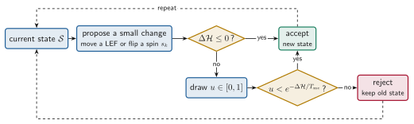
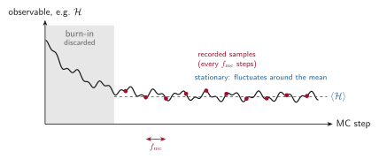
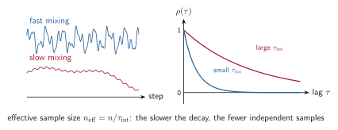
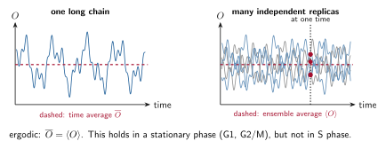

Monte Carlo, MCMC and Metropolis¶
RepliSage explores its configurations with a Markov chain Monte Carlo (MCMC) method. This page explains the words, and how to tell whether a chain can be trusted. The Monte Carlo model page gives the details of the RepliSage moves, and the Analysis page lists the diagnostics that the report computes.
Key terms at a glance¶
| Term | Short definition |
|---|---|
| Monte Carlo simulation | Estimating an average from random samples instead of summing over all states |
| Markov chain | A sequence of states in which the next state depends only on the current one |
| MCMC | A Markov chain built so that, in the long run, states appear with the target probability \(p(\mathcal{S}) \propto e^{-\mathcal{H}/T_{\text{mc}}}\) |
| Metropolis rule | Accept a proposed change with probability \(\min(1, e^{-\Delta\mathcal{H}/T_{\text{mc}}})\), otherwise keep the old state |
| Proposal | One attempted change of the configuration: a LEF move or a change of an epigenetic state |
Sweep (N_SWEEP) |
The number of proposals made in one Monte Carlo step |
| Monte Carlo step | One unit of simulated (pseudo)time: N_SWEEP proposals in a row |
Sampling step (MC_STEP) |
A configuration is saved every MC_STEP Monte Carlo steps. Saved configurations are the recorded samples that all statistics and 3D structures use |
| Detailed balance | For any two configurations \(\mathcal{S}_a\) and \(\mathcal{S}_b\) (here \(a\) and \(b\) just label states, they are unrelated to compartments A and B), the probability to be in \(\mathcal{S}_a\) and move to \(\mathcal{S}_b\) equals the probability to be in \(\mathcal{S}_b\) and move to \(\mathcal{S}_a\): \(p(\mathcal{S}_a)\,P(\mathcal{S}_a \to \mathcal{S}_b) = p(\mathcal{S}_b)\,P(\mathcal{S}_b \to \mathcal{S}_a)\). It guarantees that \(p\) is the stationary distribution of the chain |
| Burn-in | The first BURNIN Monte Carlo steps of a run, which are discarded because the chain still remembers its arbitrary starting configuration and has not yet reached typical states |
| Stationary | The statistics of the chain no longer change in time (true in G1 after burn-in, not in S phase) |
| Autocorrelation | How strongly a value at step \(t\) is related to the value at step \(t+\tau\) |
| Mixing | How fast the chain forgets where it was; slow mixing means large autocorrelation |
| Ergodic mean | The time average of one long chain, which equals the ensemble average when the chain is ergodic |
Monte Carlo simulation¶
A Monte Carlo simulation estimates an average by random sampling. We want the expected value of an observable \(O\) (say, the mean loop length) over a probability distribution \(p(\mathcal{S})\) of states \(\mathcal{S}\),
The sum is over astronomically many states, so we cannot do it exactly. Instead we draw \(n\) states \(\mathcal{S}_1, \dots, \mathcal{S}_n\) from \(p\) and use the sample mean, which converges to \(\langle O \rangle\) when \(n\) is large.
Markov chains and MCMC¶
The difficulty is how to draw samples from \(p(\mathcal{S}) \propto e^{-\mathcal{H}/T_{\text{mc}}}\) when we do not know the normalisation \(\mathcal{Z}\). MCMC builds a Markov chain, a sequence of states in which each state depends only on the previous one, designed so that in the long run the chain visits each state with probability \(p(\mathcal{S})\). The samples are not independent, but they have the right distribution.
The Metropolis algorithm¶
The Metropolis algorithm is the recipe RepliSage uses. Starting from the current state, it proposes a small random change (move a LEF, or change the epigenetic state \(s_k\)) and accepts it with probability
Downhill moves are always accepted, uphill moves sometimes. Because only the energy difference appears, \(\mathcal{Z}\) is never needed. If a move is rejected, the old state is counted again.

The rule satisfies detailed balance. Take two configurations \(\mathcal{S}_a\) and \(\mathcal{S}_b\) (the letters only label the states, they are not compartments). In equilibrium, the chance of being in \(\mathcal{S}_a\) and jumping to \(\mathcal{S}_b\) equals the chance of being in \(\mathcal{S}_b\) and jumping back:
With the Metropolis acceptance probability this holds exactly when \(p(\mathcal{S}) \propto e^{-\mathcal{H}(\mathcal{S})/T_{\text{mc}}}\), so the chain converges to the Boltzmann distribution, as long as the energy \(\mathcal{H}\) is fixed. In RepliSage's S phase it is not fixed (see the Hamiltonian idea).
How RepliSage uses it¶
A run has a simple structure. Each Monte Carlo step makes N_SWEEP proposals, the run lasts N_STEPS Monte Carlo steps, and a configuration is saved every MC_STEP steps after the burn-in:
where \(f_{\text{mc}}\) is MC_STEP.
| Word | Meaning in RepliSage | Parameter |
|---|---|---|
| Proposal | One attempted change: a LEF move with probability P_REW, otherwise an epigenetic-state change |
P_REW |
| Sweep | Number of proposals in one Monte Carlo step, \(N_{\text{sweep}}\) | N_SWEEP |
| Monte Carlo step | \(N_{\text{sweep}}\) proposals; the unit of pseudotime | |
| Run length | \(N_{\text{steps}}\) Monte Carlo steps | N_STEPS |
| Burn-in | First steps, discarded while the chain relaxes | BURNIN |
| Sampling step | A configuration is recorded every \(f_{\text{mc}}\) Monte Carlo steps | MC_STEP |
| Replicas | Independent chains with different seeds | N_REPLICAS, SEED |

How to read the figure: the curve is the value \(O_t\) of one observable (for example the energy \(\mathcal{H}\) or the mean loop length \(\langle \ell \rangle\)) at every Monte Carlo step \(t\) of a single chain. The chain starts far from typical states, so the first BURNIN steps (grey) are thrown away. After that \(O_t\) fluctuates around a stable mean \(\langle O \rangle\), and a state is stored every \(f_{\text{mc}}\) steps (red dots). Storing every step would mostly repeat nearly identical states, so a larger MC_STEP gives samples that are closer to independent. The defaults are BURNIN = 1000, MC_STEP = 200 and N_SWEEP = 1000.
Autocorrelation: how independent are the samples?¶
Neighbouring states in a chain look alike, so \(n\) samples carry less information than \(n\) independent ones. The autocorrelation of a series \(x_t\) at lag \(\tau\) measures how long the memory lasts,
where \(C(\tau)\) is the autocovariance (the average of \((x_t - \bar{x})(x_{t+\tau} - \bar{x})\) over \(t\)), so \(\rho(0) = 1\), and \(\rho\) should drop to about 0 within a few lags. The decay is summarised by the integrated autocorrelation time \(T_{\rho}\) (the sum of \(\rho(\tau)\) over lags, so it is built from the autocorrelation itself), the number of samples that count as one independent sample, and the effective sample size
If \(T_{\rho}\) is large, the chain mixes slowly: it needs many steps to forget where it was. Remedies are a longer run, a larger sampling interval, a higher \(T_{\text{mc}}\) (more uphill moves), or more replicas.

What to expect in each phase¶
Autocorrelation is not equally worrying in every phase. In G1 and G2/M the energy is fixed, so the chain relaxes to equilibrium and forgets its past quickly. In S phase the replication forks keep changing the system.
| Phase | Expected autocorrelation (size of \(T_{\rho}\)) | Why |
|---|---|---|
| G1 | Small | Fixed energy; loops and states relax quickly and the samples are close to independent |
| S | Large, almost always present | Forks move along the genome and keep pushing LEFs and the epigenetic states in a semi-deterministic way. Origin firing is stochastic, but in general it follows the replication program, so consecutive samples stay correlated |
| G2/M | Small | The replication ties are off and the energy is fixed again |
So in S phase a large autocorrelation is a real signal of the replication program, not a failed run. It shows up as a slow trend in the trace, and a longer run or a larger MC_STEP will not remove it. To separate this trend from noise, look at how the observable changes with time and compare replicas: the ensemble over replicas shows the program, and the spread between replicas shows the randomness around it. Use \(n_{\text{eff}}\) and the convergence checks mainly in the stationary phases (G1 after burn-in, and G2/M).
The ergodic mean¶
A chain is ergodic if it can reach any state from any other, so that one long run explores the whole distribution. Then the time average of one chain equals the ensemble average over many independent chains,
This is the ergodic mean, and it is why a single long Monte Carlo run is enough to estimate averages. Two cautions apply:
- Local minima. At low \(T_{\text{mc}}\) a chain can stay trapped near one valley, so its time average is not the ensemble average. Several replicas reveal this: they would disagree (see the split R-hat in Analysis).
- Non-stationary phases. In S phase the energy changes as forks move, so the distribution itself changes in time. A time average over S phase mixes different situations, and the right object is the ensemble average at each time, over replicas.

For this reason RepliSage checks convergence in the stationary part (G1 after burn-in) and compares phases using ensembles of replicas. See also microstates and macrostates.